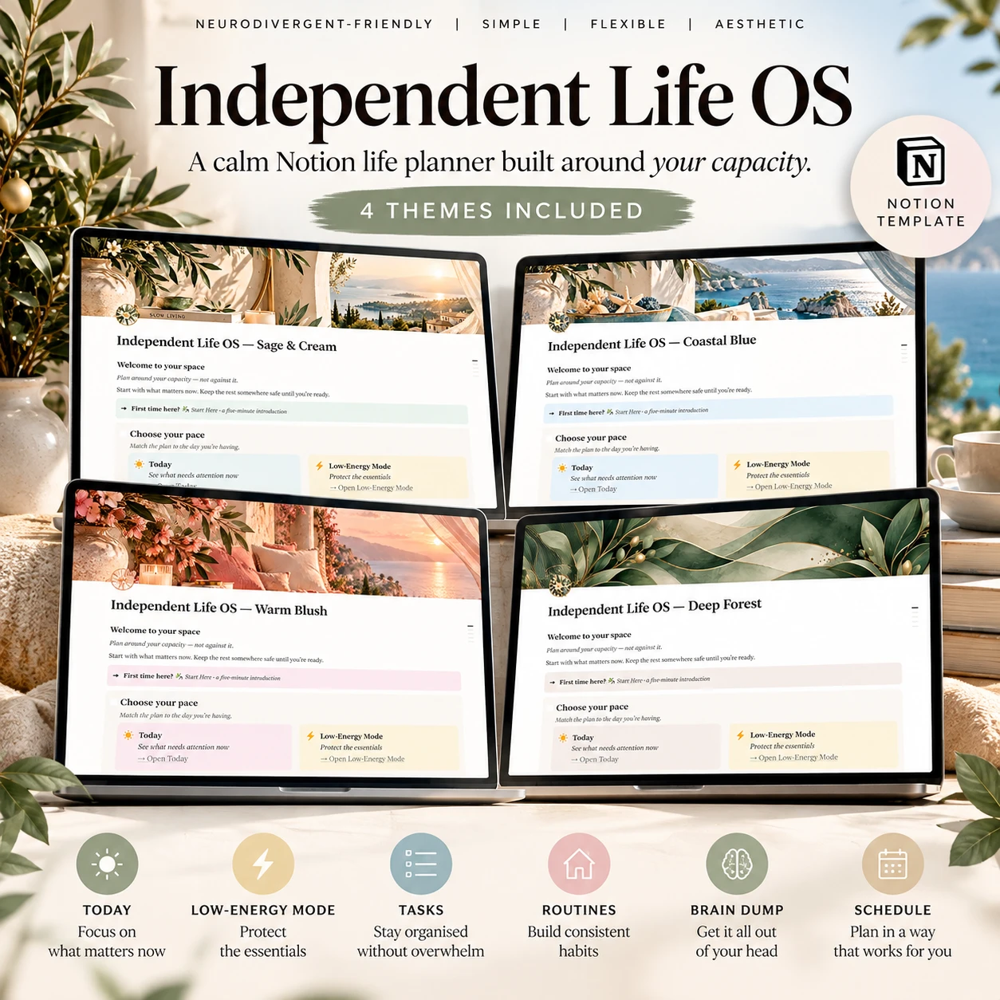

Start with what matters now.
Today gives you a focused place for today’s tasks. Low-Energy Mode brings low-energy tasks into view when your capacity is limited.

Four themes. One purchase. See the Notion screenshots below for a closer look.
Explore the four themes ↓NOTION TEMPLATES · FOR ADULTS
A calm, flexible life-management system for neurodivergent adults.
US$14.99 All four themes included
Give your tasks, routines and thoughts a place to land. Plan around your capacity and energy, with space for the days when you need to do a little less.
Four themes · US$14.99
Buy now — US$14.99Taxes, where applicable, are calculated at checkout. Continue to our Payhip checkout. After purchase, download your Start Here PDF with access to all four themes. A download link is also emailed to you.
Digital Notion template. A Notion account is required. No physical product is supplied.
YOUR SPACE. YOUR PACE.
Neurodivergent-friendly planning for adults, including Autism, ADHD and AuDHD, with practical support for everyday executive-function needs.
Today gives you a focused place for today’s tasks. Low-Energy Mode brings low-energy tasks into view when your capacity is limited.
Use Brain Dump to collect thoughts, Plan & add tasks to organise your next steps, and All Tasks when you want the broader picture.
Keep everyday patterns in Routines and plans in Schedule. Begin with Start Here, then use the parts that fit your life and energy.
ONE PURCHASE · FOUR THEMES
All four themes are included for US$14.99. Choose a favourite, or duplicate more than one into your Notion workspace.
Screenshots of the actual Notion dashboards. Select a preview to view it at full size.
BEFORE YOU CHOOSE
Independent Life OS in four themes: Sage & Cream, Coastal Blue, Warm Blush and Deep Forest. Each theme includes Today, Low-Energy Mode, Plan & add tasks, Routines, Brain Dump, Schedule, All Tasks and Start Here, with capacity/energy-based planning.
Neurodivergent adults, including autistic adults and adults with ADHD or AuDHD, who want a flexible place to manage everyday tasks and routines. Choose the sections that are useful to you and adjust your planning to your capacity.
Yes. You need a Notion account to duplicate the template into your own workspace. Independent Life OS is a template used inside Notion.
The Start Here PDF contains access links and setup steps. Sign in to Notion in your browser, open the theme-selection page, choose a theme and select Duplicate. Open Start Here inside your copy for the introduction.
No. The US$14.99 purchase includes all four themes. You can choose the look you prefer without buying another version.
No. This is a digital Notion template. No printed planner or physical product is supplied.
Email the studio if you need more detail about the template.
INDEPENDENT LIFE OS
Four themes for your everyday life · US$14.99